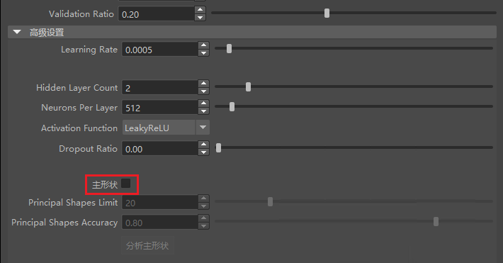

ML 变形器在应用于基础形状时计算近似所需目标形状的增量。默认情况下，ML 变形器针对每个顶点计算这些增量。
但是，您也可以通过组合多个生成的融合变形来近似计算总体形状差异，这在变形期间可以提高解算速度。这些生成的融合变形称为主形状。
主形状通过学习主形状所需的融合权重，实现与从单个顶点移动学习相同的效果。换句话说，控件将映射到主形状权重，而不是直接映射到单个顶点移动。
使用的主形状数量确定获得相同结果的精确程度。在导出训练数据后，可以生成主形状。
在训练 ML 变形器之前，可以根据速度还是精确度更重要来限制使用的主形状数量。主形状分析可告知达到特定级别的精确度所需的主形状数量。
将主形状用于目标变形
- 设置 ML 变形器后（执行到使用单独的目标几何体创建 ML 变形器主题中的步骤 8），导出训练数据。（有关设置的说明，请参见 ML 变形器“导出训练数据”(Export Training Data)窗口。）
- 打开 ML 变形器“训练设置”(Training Settings)窗口，并验证训练数据位置是否正确。
- 展开“高级设置”(Advanced Settings)部分，然后选中“主形状”(Principal Shapes)。

激活“主形状”(Principal Shapes)
- 单击“分析主形状”(Analyze Principal Shapes)。
分析可能需要花费一些时间，具体取决于训练数据的大小。分析完成后，将填充表。
- 查看通过分析填充的表。白色行表示将在训练中使用的主形状。形状数将与“主形状精确度”(Principal Shapes Accuracy)设置中设定的形状数量相同，但不超过“主形状限制”(Principal Shapes Limit)。
- 调整“主形状限制”(Principal Shapes Limit)和“主形状精确度”(Principal Shapes Accuracy)滑块以包含要使用的形状数。要使用的形状数取决于所近似的绑定和变形，有时可能无法达到所需的精确度级别。
根据需要调整其他训练设置。
- 训练模型。将再次分析主形状，这可能需要一些时间。
- 查看结果。如果需要，可以调整设置并再次进行训练。